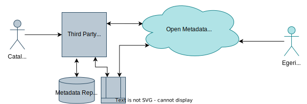
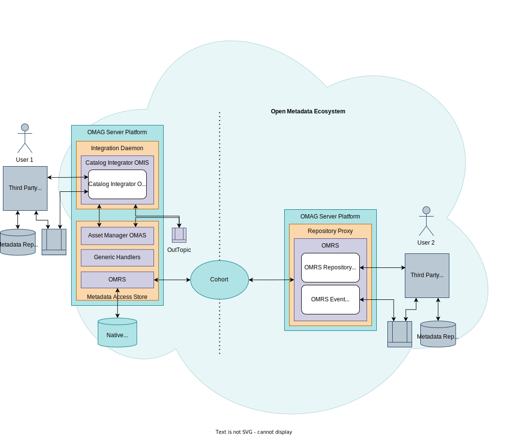
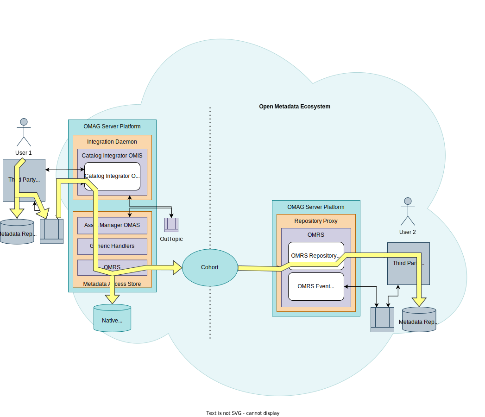
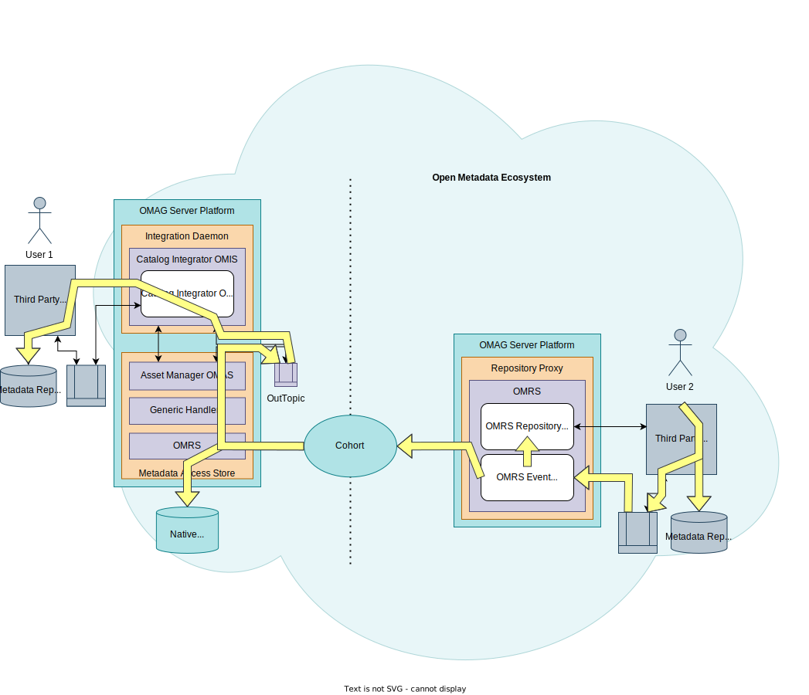
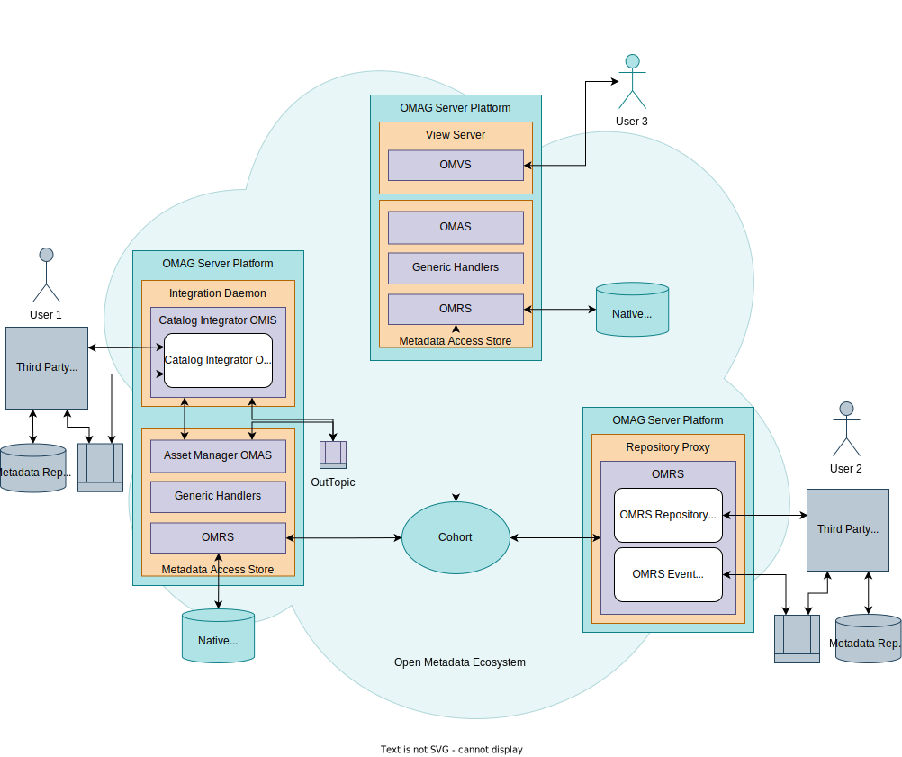
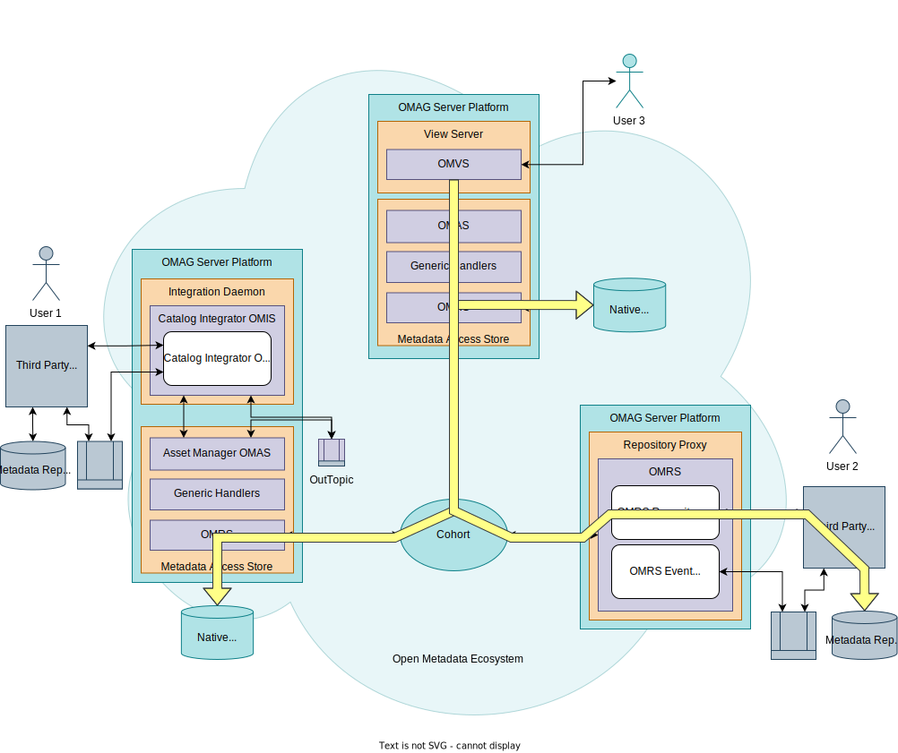
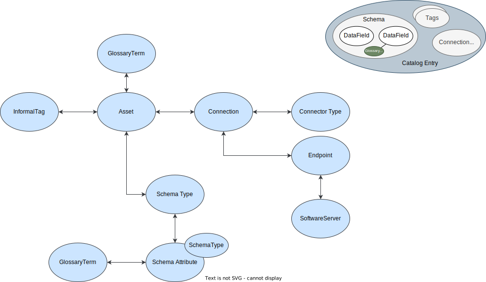

Integrating metadata catalogs into the open metadata ecosystem¶
Integrating metadata catalogs into the open metadata ecosystem provides access to a broader collection of metadata from your existing deployed tools.

Types of metadata repository¶
Not all metadata catalogs are the same.
Many metadata repositories are data catalogs. They focus on gathering and organizing information about data sources for a team of data professionals. Each data source is catalogued under the guidance of its users. There is some automation for maintaining the catalogued data sources. The aim is to provide the metadata needed by the local team.
There are also metadata repositories that focus on providing metadata to the whole enterprise, or support a diverse set of tools that are part of a suite. These repositories often have a focus on subject area materials and automation of metadata maintenance and stewardship. They are deployed and controlled as a centralized service. Some of these repositories are specialized for different types of use cases and often includes support for governance - for example, it may have a focus on Data Governance, IT Infrastructure Governance or Security Governance.
How do you integrate catalogs?¶
How should you connect a third party data catalog into the open metadata ecosystem?

Egeria offers two choices on how to integrate such catalogs:
- Integrate via a repository connector running in a Repository Proxy.
- Integrate via an integration connector using the Catalog Integrator OMIS running in an integration connector.
Broadly speaking, the repository connector integration is for the metadata repository, and the integration connector is for the data catalog. However, to understand why, and to be sure that you are making the right decision, this page goes into more detail on the mechanisms that surround these connectors.
Metadata exchange example¶
Third party technologies are typically integrated in incremental stages. This metadata server exchange example shows an example of this process. It begins with the cohort integration.
A cohort uses a peer-to-peer exchange protocol. Servers that implement the protocol's open metadata APIs and event exchange sequences can become a member of one or more cohorts. Each member of a cohort can send notifications about updates to its metadata to the other members of the cohort as well as query/update metadata from all the member repositories.
Since the cohort protocols are open, they can be implemented by any technology. However, this pattern focuses on integrating third party metadata servers that use Egeria to implement the protocol.
Introducing the repository proxy¶
Third party metadata servers that do not directly support any of the open metadata APIs and protocols need an adapter to convert their events and APIs into open metadata events and APIs as well as manage the protocol event sequencing.
This first option uses the Repository Proxy as the adapter for third party metadata servers. Inside the repository proxy are plug points for two connectors:
- The OMRS Repository Connector - translates calls to the OMRS Repository REST API to calls to the third party metadata server's API.
- The OMRS Event Mapper - translates events from the third party metadata server to open metadata events.
The repository proxy represents the third party metadata server in the cohort and calls the connectors as required. You need one repository proxy for each third party metadata server that you want to be in the solution.
Figure 1 shows the repository proxy in action:

Figure 1: showing a repository proxy acting as an adapter for a third party metadata server
You can create your own implementation of the repository connectors for your favorite metadata server. Alternatively Egeria provides repository connector implementations for two third party metadata servers:
We will use these implementations to illustrate how the repository proxies work. We are also assuming that in this example, glossary terms are being maintained in IGC and the organization wants to connect these terms to the Hadoop data sources described in Apache Atlas.
Working with read-only third party metadata repository connectors¶
Most third party metadata servers do not support the storing of metadata from other metadata servers. The sticking point is typically that it can not store information about where the metadata came from, and it can not guarantee that metadata from another metadata server is not updatable through its APIs and user interfaces. There can also be more subtle issues in the scale (size) of metadata descriptions or errors caused by unexpected values they contain.
This is why it is common that the repository connectors for third party metadata servers only support what we call read-only operation. They can publish information about metadata stored in the third party metadata servers, and support open metadata queries to that repository. However, they do not pass metadata from other metadata servers to the third party metadata server.
Both IGC's and Atlas's repository connectors are read-only. Figure 2 shows them connected to their repository proxies and how they operate.

Figure 2: Read only repository connector operation
Because of their read-only nature, if we just connected them together in a cohort, it would be like two people talking and no-one listening. There would be no value to the solution.
Creating an enterprise view¶
Figure 3 shows a possible extension using an OMAG Server called the Metadata Access Point. This provides specialist APIs and events for retrieving and maintaining open metadata. The metadata access point can be augmented with a View Server to support a UI, or provide services to other third party tools.

Figure 3: Using a metadata access point to create an enterprise view
With this approach it is possible to issue queries that return metadata content from both Atlas and IGC as if they were one metadata repository. However, there is no support for updates or linking this metadata together.
Linking metadata from different metadata servers¶
Figure 4 adds an Egeria metadata access store to the cohort enabling the storage of new metadata. This means that the APIs of the metadata access point can be used to link glossary terms from IGC to asset definitions from Atlas. These links (called relationships) are stored in the metadata access store. When queries for metadata are made through the metadata access point, the IGC glossary terms are shown linked to the Atlas assets as if all the metadata is stored in a single repository.

Figure 4: Using a metadata access store to provide storage for relationships between IGC and Atlas metadata
Expanding the scope of metadata being captured¶
With the metadata access store in place, it is possible to connect an Integration Daemon to the metadata access store to provide metadata synchronization to/from additional third party technologies as shown in figure 5.

Figure 5: Using a metadata server to provide storage for new metadata
With the above capabilities deployed, there is now a rich source of metadata visible through the metadata access point. Metadata from the IGC and Atlas repositories can be retrieved, combined and used in new ways without needing to change their implementation.
However, there is no additional metadata being made available through either the IGC or Atlas UIs since they only access metadata stored in their own private metadata repositories.
Integrating third party metadata servers through the integration daemon¶
There is an alternative integration path for third party metadata servers to integrate into the open metadata ecosystem even when they do not meet the requirements to have their repository connectors write metadata into their private metadata repository.
Figure 6 shows IGC connected using this alternative approach. IGC is now connecting through an integration daemon in a similar way to the other third party technologies shown in Figure 5. Storing metadata from other repositories is now possible because IGC is no longer providing metadata services to the broader metadata ecosystem as part of the cohort federated queries, removing the requirement to store information about where the metadata came from. The downside is that the metadata in the IGC's xMeta repository is no longer visible to the metadata access point because IGC is no longer a member of the cohort. IGC's metadata will have to be extracted by the integration daemon and stored in the metadata access store for it to be more broadly used.
With this approach, IGC can update its own metadata, and any metadata created through the metadata access point. However, an attempt to update metadata that originated in Atlas would fail when the integration daemon attempted to publish this update into the metadata access store. (See metadata provenance to understand why.)

Figure 6: Integrating a third party metadata server through the integration daemon
Note: this pattern could be repeated to move Apache Atlas to connect through an integration daemon too.
Summary
In these examples, you have seen different mechanisms for integrating third party metadata servers together and then build out the metadata ecosystem to enable new use cases.
There are two main integration approaches:
- Integrating using a repository proxy, brings the third party metadata server into the heart of the open metadata ecosystem, enabling queries to its repository to be made by other open metadata services.
- Integrating via an integration daemon has the third party metadata server on the edge of the open metadata ecosystem. It is not being queried directly, but can engage in two-way metadata exchange through the integration daemon.
Further information
More about the different types of Cohort Membersincluding information on how to configure them. Specifically
- Repository Proxy to host repository connectors to a third party metadata repository.
- Integration Daemon to host integration connectors to a third party metadata repository.
- Metadata Access Point to provide new APIs to the federated metadata.
- Metadata Access Store to provide the store for new metadata.
There is also specific configuration information for the IBM Information Governance Catalog (IGC) and Apache Atlas setup below:
These are links to more information about cohorts
- Operation of the Open Metadata Repository Cohort
- Querying the members of an Open Metadata Repository Cohort
This link provides guidance if you are interested in writing your own repository connectors:
Comparison of the infrastructure¶
User 1 works with metadata stored in Metadata Repository 1 User 2 works with metadata in Metadata Repository 2

Integration connectors run in an integration daemon connected to a metadata access store. Repository connectors run in a repository proxy directly connected to one or more cohorts.
Adding metadata via the integration connector¶
Native metadata repository 3 maintains a copy of metadata repository 1. The integration connector chooses which of these repositories is the home directory. Metadata copied into metadata repository 2 is a reference-copy.

Adding metadata via the repository connector¶

Accessing metadata from the broader cohort¶


API comparison¶
Repository Connector API¶
API is a fine-grained repository API. OMRS handles metadata integrity and coordination of exchange.

Integration Connector API¶
Connector API much simpler.

Effort still required to map between the Catalog Integrator OMIS context and the third party catalog interface.

Link to external identifiers.
Conclusion¶
Choosing the appropriate type of connector for your data catalog depends on the capability of the catalog and its intended usage.
| Simple choices in favour of an integration connector | Simple choices in favor of the repository connectors |
|---|---|
| Will not/can not support federated queries due to API or capacity | Volume and rate of change of metadata makes a copy impractical |
| Wildly different granularity of API from the OMRS | Sensitivity of metadata makes owners unwilling to share with no-one but a few trusted users |
Other considerations:
- Control of which metadata is shared
- Control of update rights
- Storing reference copies
Raise an issue or comment below